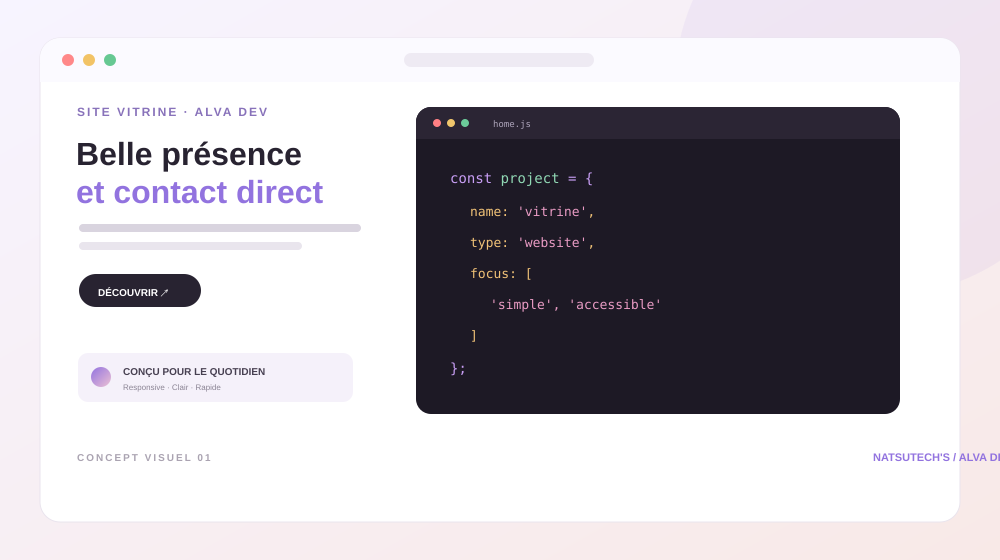

Création numérique · Congo
Des idées qui prennent
vie sur le web.
Je crée des sites web et des outils numériques clairs, utiles et pensés pour les gens qui les utilisent.
Disponible pour de nouveaux projetsBrazzaville, Congo
alva-dev.app
AD.
DESIGN · BUILD · SHIPVotre idée,
en ligne.Découvrir ↗
en ligne.Découvrir ↗
✦
✧ Design soigné
⌘ Code propre
DÉFILER POUR DÉCOUVRIR ↓
Ce que je fais
Du web utile,
pas juste joli.
Chaque projet commence par un besoin concret. Voici comment une idée devient un produit numérique.
01 / 04
Sites web
Des vitrines modernes qui présentent ton activité avec clarté.
Découvrir les services ↗02 / 04Applications
Des outils simples pour gérer les tâches qui prennent du temps.
Découvrir les services ↗03 / 04E-commerce
Des catalogues fluides qui facilitent les échanges et les commandes.
Découvrir les services ↗04 / 04Automatisation
Des intégrations et petits systèmes qui enlèvent les tâches répétitives.
Découvrir les services ↗Sélection
Des concepts
qui ont du sens.
Interfaces web et outils pensés pour la vie réelle. Les visuels du portfolio sont des concepts de démonstration, pas des réalisations clientes.
Ouvrir le portfolio ↗
01 — CONCEPT / WEBUne idée en tête ?
On la construit
ensemble.
Un message suffit pour commencer. Raconte-moi ce que tu veux créer.
Me contacter ↗